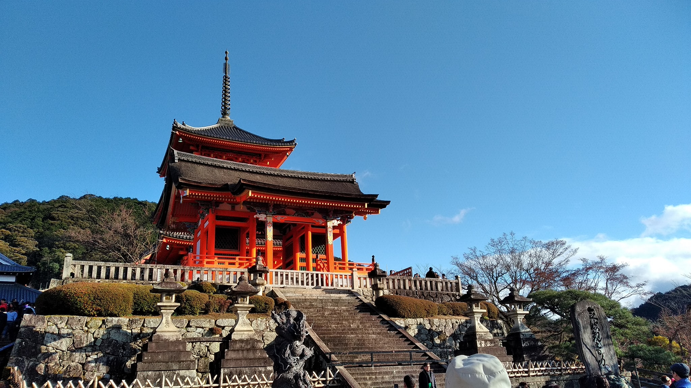
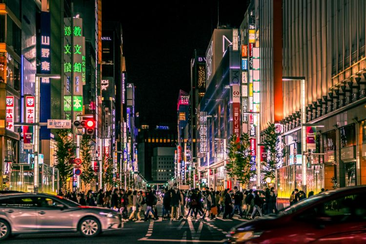

Utazásom Japánba
Nyitó
Utazás
Tokió
Kiotó - Kóbe - Oszaka
Tokió - a világ legnépesebb városa


Tokióban négy napot töltöttünk - megnéztünk pár nagyon érdekes kiállítást, utcai vásárokat.
Készítette: Kurta Emma 2024.05.03